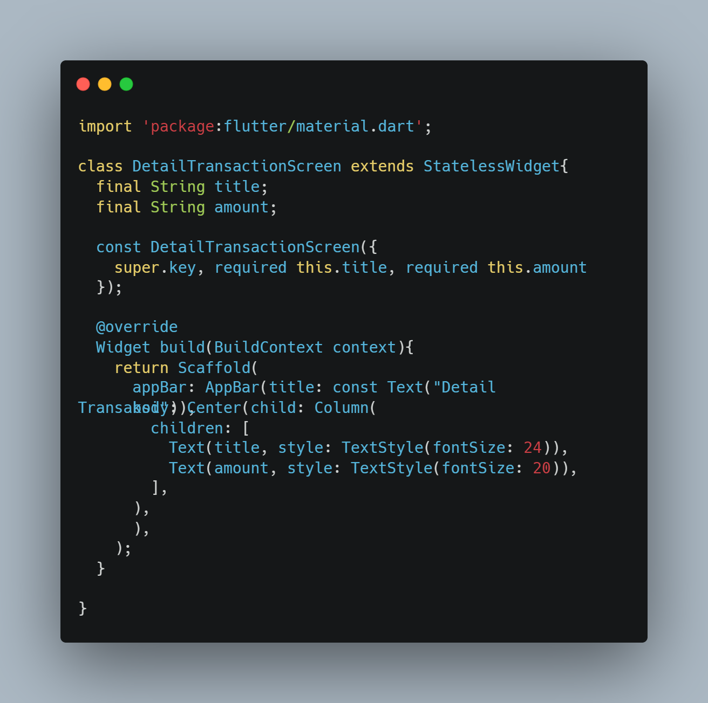
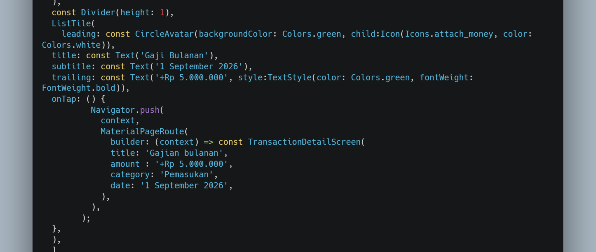
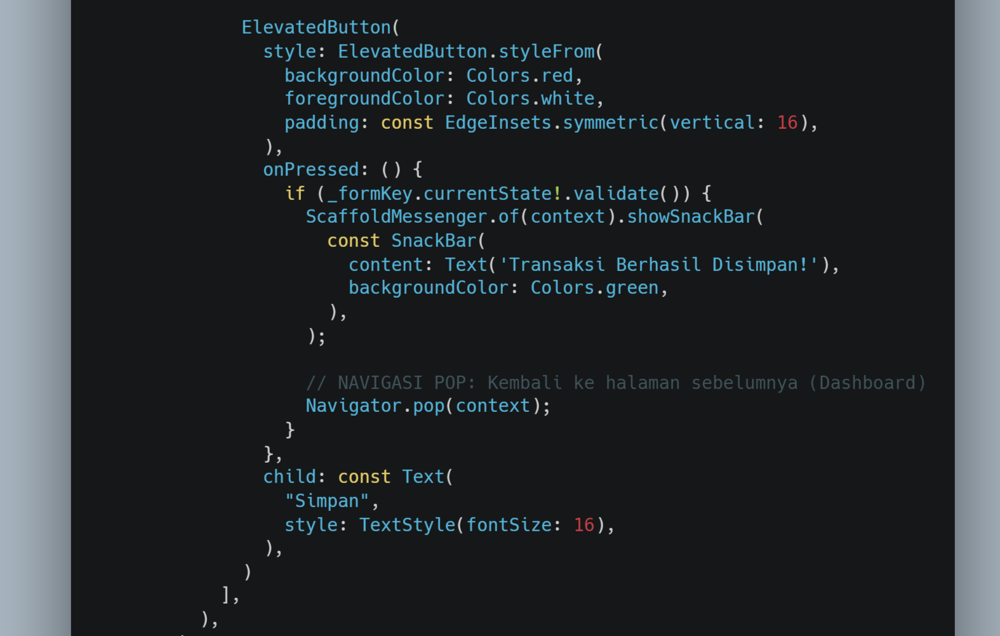
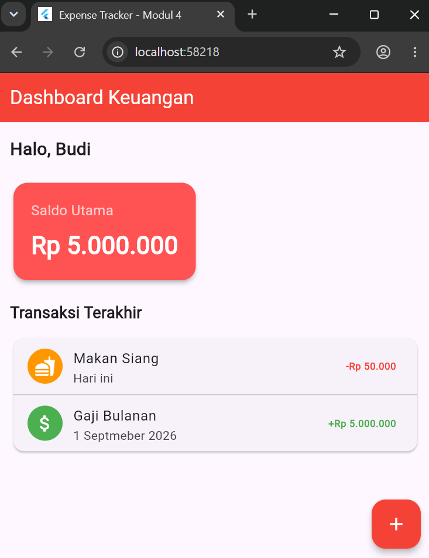
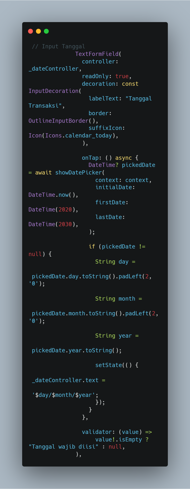
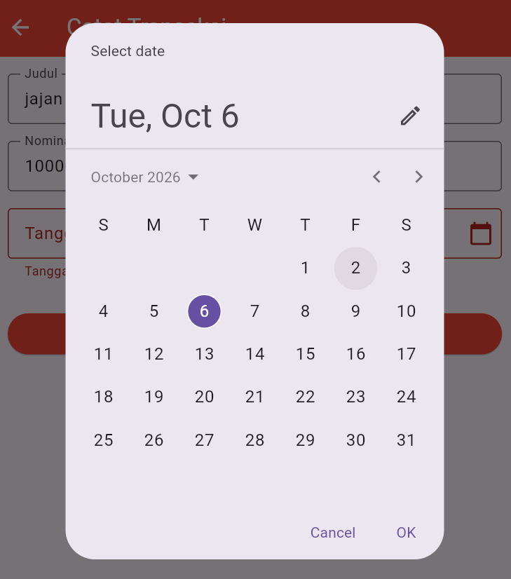
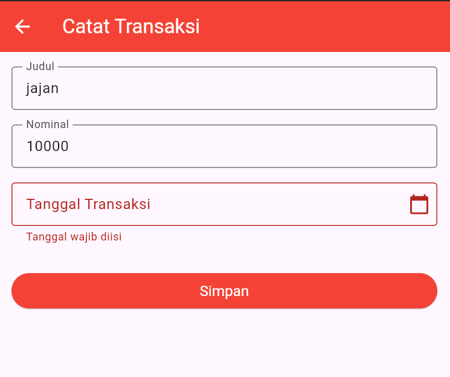

Praktikum 4 membahas Navigasi & Passing Data pada Flutter dengan fokus pada penggunaan Navigator.push, Navigator.pop, konsep Stack, serta pengiriman data antarhalaman melalui Constructor. Data transaksi dikirim dari halaman Dashboard ke halaman Detail Transaksi sesuai data yang dipilih pengguna.
Buat file transaction_detail_screen.dart di dalam folder lib. Siapkan variabel final untuk menerima title, amount, category, dan date. Gunakan Constructor dengan required agar data tersebut wajib diberikan ketika halaman detail dibuat, kemudian tampilkan data pada UI menggunakan Text.

Gambar 1. Membuat halaman Detail Transaksi dan Constructor penerima data
Buka kembali dashboard_screen.dart. Pada ListTile transaksi, tambahkan fungsi onTap dan gunakan Navigator.push dengan MaterialPageRoute. Isi data Constructor TransactionDetailScreen berupa judul, nominal, kategori, dan tanggal sesuai dengan transaksi yang diklik.

Gambar 2. Navigator.push untuk membuka Detail Transaksi dan mengirim data
Kembali ke add_transaction_screen.dart. Setelah tombol Simpan ditekan dan form dinyatakan valid, tampilkan SnackBar kemudian gunakan Navigator.pop(context). Fungsi tersebut menutup halaman form dan mengembalikan pengguna ke halaman Dashboard.

Gambar 3. Navigator.pop untuk kembali dari Form ke Dashboard
Setelah langkah selesai, daftar transaksi pada Dashboard dapat diklik untuk membuka halaman Detail Transaksi. Halaman detail menampilkan data sesuai transaksi yang dipilih, sedangkan tombol panah kembali muncul otomatis pada AppBar karena halaman dibuka menggunakan Navigator.push.

Gambar 4. Hasil akhir Dashboard dan Detail Transaksi
Tambahkan satu input baru sebelum tombol Simpan pada add_transaction_screen.dart untuk mengisi Tanggal Transaksi. Sesuai modul, input dapat menggunakan TextFormField dengan format DD/MM/YYYY atau menggunakan fungsi showDatePicker.

Gambar 5. Penambahan input Tanggal Transaksi sebelum tombol Simpan
Jika menggunakan showDatePicker, buat input tanggal dapat dipilih melalui kalender. Setelah tanggal dipilih, tampilkan hasilnya pada field tanggal dengan format DD/MM/YYYY.

Gambar 6. Pemilihan Tanggal Transaksi menggunakan showDatePicker
Berikan validasi pada input tanggal agar wajib diisi. Ketika tombol Simpan ditekan dan tanggal belum dipilih atau diisi, form harus menampilkan pesan kesalahan. Jika seluruh input valid, proses penyimpanan tetap dilanjutkan dan halaman dapat ditutup dengan Navigator.pop.

Gambar 7. Validasi Tanggal Transaksi wajib diisi
Hasil praktikum berupa aplikasi Flutter yang memiliki beberapa halaman dan dapat berpindah menggunakan Navigator.push serta kembali menggunakan Navigator.pop. Data transaksi dapat dikirim dari Dashboard ke halaman Detail Transaksi melalui Constructor, sehingga detail yang ditampilkan menyesuaikan transaksi yang dipilih. Pada tugas, form transaksi juga memiliki input Tanggal Transaksi dengan validasi wajib diisi.
Praktikum 4 memberikan pemahaman tentang navigasi halaman pada Flutter menggunakan konsep Stack. Navigator.push digunakan untuk menambahkan dan membuka halaman baru, sedangkan Navigator.pop digunakan untuk kembali ke halaman sebelumnya. Passing data dilakukan melalui Constructor dengan variabel final dan parameter required. Latihan pada modul menambahkan Tanggal Transaksi beserta validasi wajib diisi pada form.
Source code Praktikum dapat dilihat melalui repository berikut.
Lihat Repository GitHub